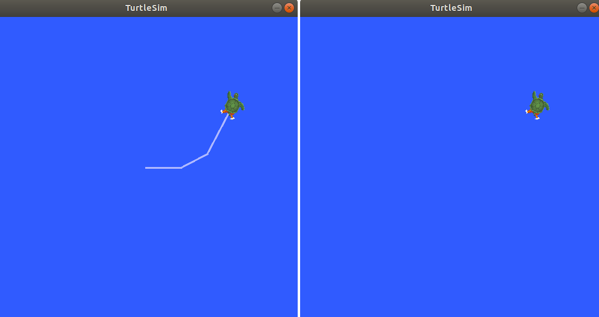
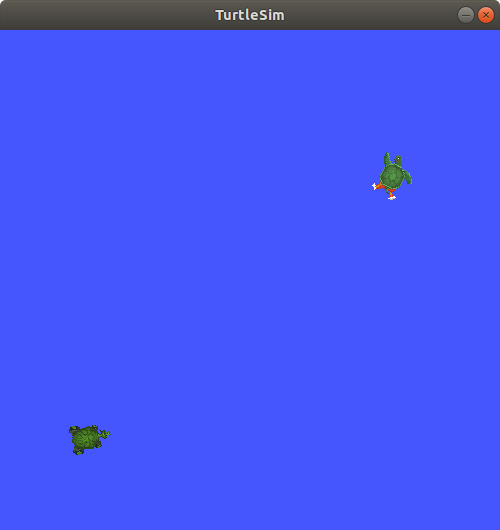

备注
You're reading the documentation for a development version. For the latest released version, please have a look at Lyrical.
Learning about services - tutorial
Services let nodes request data or trigger behavior only when needed. In this article, you will use turtlesim and command-line tools to list, inspect, call, and echo ROS services. After you follow these steps, you will understand how service clients, servers, request types, and response types work.
Goal: Learn about services in ROS 2 using command line tools.
Services are one of the communication types used to exchange data in a ROS system. This article walks you through using command-line tools to examine and call services between nodes. A hands-on exercise with Turtlesim helps you understand how the call-and-response model works in the ROS graph.
Summary
Services use a call-and-response model: a client sends a request to a server, which processes it and returns a response. Unlike topics, services only provide data when specifically called, so they are not suited for continuous data streams.
For more information, see How ROS works.
Prerequisites
Make sure you have installed the turtlesim package.
Steps
备注
Do not forget to source ROS in every new terminal you open. See Configuring environment.
1 Setup
You need a running system with services to inspect.
Start the /turtlesim node, which provides the application services you will examine and call later (such as /clear and /spawn).
Open a new terminal and run:
$ ros2 run turtlesim turtlesim_node
Open another terminal and run:
$ ros2 run turtlesim turtle_teleop_key
Running this node along with turtlesim_node lets you see that each node exposes its own set of parameter services when you list services.
Leave both terminals running while you work through the Turtlesim examples below.
2 List the active services
Listing services is useful when you need to discover what you can call on a running system. To list all the services currently active in the system, in a new terminal, run:
$ ros2 service list
The terminal returns the active service names:
/clear
/kill
/reset
/spawn
/teleop_turtle/describe_parameters
/teleop_turtle/get_parameter_types
/teleop_turtle/get_parameters
/teleop_turtle/list_parameters
/teleop_turtle/set_parameters
/teleop_turtle/set_parameters_atomically
/turtle1/set_pen
/turtle1/teleport_absolute
/turtle1/teleport_relative
/turtlesim/describe_parameters
/turtlesim/get_parameter_types
/turtlesim/get_parameters
/turtlesim/list_parameters
/turtlesim/set_parameters
/turtlesim/set_parameters_atomically
Both Turtlesim nodes have the same six services with parameters in their names.
Nearly every node in ROS has these infrastructure services on which parameters are based.
Parameters are covered in Learning about parameters.
In this tutorial, the parameter services will not be discussed in detail.
The turtlesim-specific services are /clear, /kill, /reset, /spawn, /turtle1/set_pen, /turtle1/teleport_absolute, and /turtle1/teleport_relative.
Some of these services were covered in the Using turtlesim, ros2, and rqt tutorial.
3 View the service type
Before you call a service, you need its type so you know what request and response data it expects. Services have types that describe how that data is structured. Service types are defined similarly to topic types, except service types have two parts: one message for the request and another for the response.
To find out the type of a service, run:
$ ros2 service type <service_name>
For example, to check Turtlesim's /clear service, open a new terminal and run:
$ ros2 service type /clear
The terminal returns:
std_srvs/srv/Empty
The Empty type means the service call sends no data when making a request and receives no data when receiving a response.
3.1 View a list of all active services
When you need a quick overview of every service and its type together, append the --show-types option (abbreviated as -t) to the list command:
$ ros2 service list -t
The terminal returns each service with its type:
/clear [std_srvs/srv/Empty]
/kill [turtlesim_msgs/srv/Kill]
/reset [std_srvs/srv/Empty]
/spawn [turtlesim_msgs/srv/Spawn]
...
/turtle1/set_pen [turtlesim_msgs/srv/SetPen]
/turtle1/teleport_absolute [turtlesim_msgs/srv/TeleportAbsolute]
/turtle1/teleport_relative [turtlesim_msgs/srv/TeleportRelative]
...
4 View the information about a particular service
Use ros2 service info to see a service's type and how many clients and servers are using it.
To inspect a particular service, run:
$ ros2 service info <service_name>
For example, to check the /clear service, run:
$ ros2 service info /clear
The terminal returns:
Type: std_srvs/srv/Empty
Clients count: 0
Services count: 1
To see more detail about the same service, including which node provides it, append the --verbose (or -v) option:
$ ros2 service info --verbose <service_name>
备注
The --verbose option is available on Lyrical.
Older distributions do not support it.
For example, to get verbose information about the /clear service:
$ ros2 service info --verbose /clear
Besides the basic type and client/server counts, the verbose result also shows which node provides the service and the low-level connection details from the ROS middleware (RMW).
You mainly need those details when troubleshooting connection problems with a service.
The Endpoint count value is 2 for DDS-based RMW implementations (rmw_connextdds, rmw_cyclonedds, rmw_fastrtps) because DDS creates two endpoints per service server: one for request and one for response.
Type: std_srvs/srv/Empty
Clients count: 0
Services count: 1
Node name: turtlesim
Node namespace: /
Service type: std_srvs/srv/Empty
Service type hash: RIHS01_5888399dedec5ccc85ea6451949fd2c9f97bfdf963f9a588821639fcd31b5d19
Endpoint type: SERVER
Endpoint count: 2
GIDs:
- Request Reader : 01.0f.93.f0.07.92.53.47.00.00.00.00.00.00.13.04
- Response Writer : 01.0f.93.f0.07.92.53.47.00.00.00.00.00.00.14.03
QoS profiles:
- Request Reader :
Reliability: RELIABLE
History (Depth): KEEP_LAST (10)
Durability: VOLATILE
Lifespan: Infinite
Deadline: Infinite
Liveliness: AUTOMATIC
Liveliness lease duration: Infinite
- Response Writer :
Reliability: RELIABLE
History (Depth): KEEP_LAST (10)
Durability: VOLATILE
Lifespan: Infinite
Deadline: Infinite
Liveliness: AUTOMATIC
Liveliness lease duration: Infinite
For non-DDS RMW implementations such as rmw_zenoh_cpp, the Endpoint count value is 1 because a single endpoint handles both request and response.
Type: std_srvs/srv/Empty
Clients count: 0
Services count: 1
Node name: turtlesim
Node namespace: /
Service type: std_srvs/srv/Empty
Service type hash: RIHS01_5888399dedec5ccc85ea6451949fd2c9f97bfdf963f9a588821639fcd31b5d19
Endpoint type: SERVER
Endpoint count: 1
GID: 59.b0.ea.78.57.3c.52.b4.c6.e9.af.44.22.3d.7c.f5
QoS profile:
Reliability: RELIABLE
History (Depth): KEEP_LAST (10)
Durability: VOLATILE
Lifespan: Infinite
Deadline: Infinite
Liveliness: AUTOMATIC
Liveliness lease duration: Infinite
To learn more about different RMW implementations, see About Different Middleware Vendors.
5 Find services of a specific type
Use ros2 service find when you know the type you need and want every service that uses it.
For example, you can find all Empty services in the graph.
To find all the services of a specific type, run:
$ ros2 service find <type_name>
To find all Empty typed services, run:
$ ros2 service find std_srvs/srv/Empty
The terminal returns:
/clear
/reset
6 View the arguments of the call and response for a service type
Before you call a service with arguments, inspect its type so you know which fields the request needs and what the response contains.
To inspect a service type's structure, run:
$ ros2 interface show <type_name>
Try the following command on the /clear service's type, Empty:
$ ros2 interface show std_srvs/srv/Empty
The terminal returns:
---
The --- separates the request structure from the response structure.
The Empty type doesn't send or receive any data, so its structure is blank above and below the separator.
Let's introspect a service with a type that sends and receives data, like /spawn.
From the results of ros2 service list -t, we know /spawn's type is turtlesim_msgs/srv/Spawn.
To see the request and response arguments of the /spawn service, run:
$ ros2 interface show turtlesim_msgs/srv/Spawn
The terminal returns:
float32 x
float32 y
float32 theta
string name # Optional. A unique name will be created and returned if this is empty
---
string name
The text above the separator lists the arguments needed to call /spawn:
x, y and theta determine the 2D pose of the spawned turtle, and name is optional.
The text below the separator line is the response. In this case, the response is the name assigned to the new turtle.
7 Call a service from the command line
Now that you know the service names, types, and argument layouts, you can send requests from the command line.
To call a service, use:
$ ros2 service call <service_name> <service_type> <arguments>
The <arguments> part is optional.
For example, Empty typed services don't have any arguments:
$ ros2 service call /clear std_srvs/srv/Empty
This clears the Turtlesim window of any lines drawn by the turtle.

Next, spawn a new turtle by calling /spawn with arguments.
Arguments in a service call from the command line must be in YAML syntax.
To spawn a new turtle, run:
$ ros2 service call /spawn turtlesim_msgs/srv/Spawn "{x: 2, y: 2, theta: 0.2, name: ''}"
备注
On distributions older than Kilted, use the type turtlesim/srv/Spawn instead.
The terminal shows the request that was sent and the service response:
requester: making request: turtlesim_msgs.srv.Spawn_Request(x=2.0, y=2.0, theta=0.2, name='')
response:
turtlesim_msgs.srv.Spawn_Response(name='turtle2')
The Turtlesim window updates with the newly spawned turtle:

8 Monitor the communication between a service client and a service server
Sometimes you may need to watch the request and response traffic as it happens. For example, you might want to debug a client that seems to hang, or verify that a server received the fields you expect.
Use ros2 service echo to print that live traffic:
$ ros2 service echo <service_name | service_type> <arguments>
ros2 service echo needs service introspection, which Turtlesim does not enable.
Use the demo_nodes_cpp introspection demo instead.
Start the introspection demo, which runs the introspection_client and introspection_service nodes, and leave this terminal running:
$ ros2 launch demo_nodes_cpp introspect_services_launch.py
ros2 service echo only works when service introspection is enabled.
In your own nodes, you would call configure_introspection on the client and server after you create them.
The demo exposes that setting as parameters, so you can turn introspection on from the command line.
Open another terminal and enable introspection on both demo nodes:
$ ros2 param set /introspection_service service_configure_introspection contents
$ ros2 param set /introspection_client client_configure_introspection contents
Open another terminal and watch the /add_two_ints service.
The demo client calls that service repeatedly, so you should see a continuous stream of events:
$ ros2 service echo --flow-style /add_two_ints
The terminal shows events for each request and response as they pass between the client and the server:
info:
event_type: REQUEST_SENT
stamp:
sec: 1709408301
nanosec: 423227292
client_gid: [1, 15, 0, 18, 250, 205, 12, 100, 0, 0, 0, 0, 0, 0, 21, 3]
sequence_number: 618
request: [{a: 2, b: 3}]
response: []
---
info:
event_type: REQUEST_RECEIVED
stamp:
sec: 1709408301
nanosec: 423601471
client_gid: [1, 15, 0, 18, 250, 205, 12, 100, 0, 0, 0, 0, 0, 0, 20, 4]
sequence_number: 618
request: [{a: 2, b: 3}]
response: []
---
info:
event_type: RESPONSE_SENT
stamp:
sec: 1709408301
nanosec: 423900744
client_gid: [1, 15, 0, 18, 250, 205, 12, 100, 0, 0, 0, 0, 0, 0, 20, 4]
sequence_number: 618
request: []
response: [{sum: 5}]
---
info:
event_type: RESPONSE_RECEIVED
stamp:
sec: 1709408301
nanosec: 424153133
client_gid: [1, 15, 0, 18, 250, 205, 12, 100, 0, 0, 0, 0, 0, 0, 21, 3]
sequence_number: 618
request: []
response: [{sum: 5}]
---
FAQs
- What is the difference between a service and a topic?
Topics use a publish-subscribe model where data is broadcast continuously to any subscriber. Services use a call-and-response model: a client sends a specific request and waits for a single response. Use topics for continuous data streams and services for discrete, one-time interactions.
- Why do I see so many services with
parametersin their names? Nearly every ROS node automatically exposes a set of parameter services. These are infrastructure services that the parameter system is built on. This tutorial focuses on application-specific services; parameter services are covered in the parameters tutorial.
- What does the
---separator mean inros2 interface showfor a service? The
---separates the request fields from the response fields. ForEmptytyped services, both halves are blank because no data is sent or received.- When should I use a service instead of a topic?
Use a service when you need a discrete, one-time interaction with a guaranteed response, such as spawning an entity or resetting a node's state. For continuous data streams, use a topic. For long-running goals that provide feedback, consider using an action.
- Why does
ros2 service echoshow no output? Service introspection is disabled by default. Enable it on both the client and the server. In this tutorial, do that by running the
ros2 param setcommands on the demo nodes before you startros2 service echo. Keep the demo launch running in its own terminal so the client keeps sending requests.